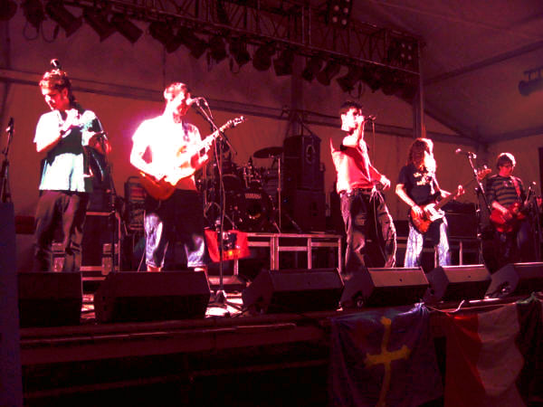

Gomeru es un grupo de música punk asturiano, se deja influenciar por otros estilos como el rock, ska, hardcore o funk.
Gomeru nace en 2004, el gomeru es un arma que representa la lucha en las calles de Asturies, un arma hecha a mano contra la represión, un arma del pueblo y sobre todo de la clase obrera. De ahí viene el nombre de este grupo de Oviedo que acaba de sacar a la luz su último trabajo 'Bales de rabia', rabia que se refleja en sus letras que nos hablan de la represión que está sufriendo la cultura de su pueblo, así como el movimiento obrero o el movimiento antifascista e independentista. Sus canciones tienen un claro mensaje anticapitalista que también llevan a la práctica al distribuir sus maquetas autoproducidas (Griesca na Cai, 2006) y (Bales de Rabia, 2008), y su disco Llume (2009) en locales sociales, bares, radios y conciertos directamente sin tener que pasar por el canon de la SGAE o vender en grandes centros comerciales como hacen otros grupos que presumen de esto.
Componentes del grupo
|
| ||||||||||||
Enlaces externos: https://www.youtube.com/watch?v=mfFnoc9ejag
Vuelve atrás pulsando aquí